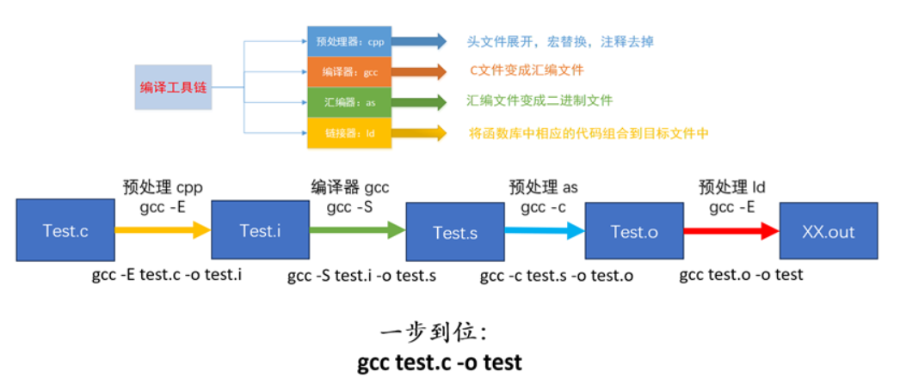
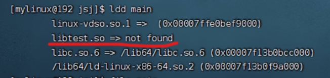
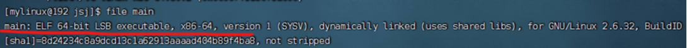
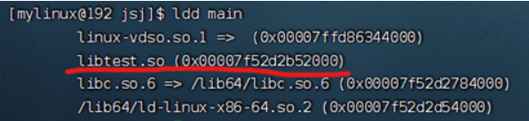

gcc 编译器
这东西是 Linux 上的 c/c++ 编译器。
5-1 gcc 的工作流程

5-2 gcc 的常用参数
-v 查看 gcc 版本号，--version 也可以
-E 生成预处理文件
-S 生成汇编文件
-c 只编译，生成.o 文件，通常称为目标文件
-I 指定头文件所在的路径
-L 指定库文件所在的路径
-l 指定库的名字
-o 指定生成的目标文件的名字
-g 包含调试信息，使用 gdb 调试需要添加 - g 参数
-On n=0∼3 编译优化，n 越大优化得越多
例如：下面代码片段
int a = 10;
int b = a;
int c = b;
printf("%d", c);
上面的代码可能会被编译器优化成:
int c = 10;
printf("%d", 10);
-Wall 提示更多警告信息
int a;
int b;
int c = 10;
printf(“[%d]\n”, c);
编译如下:
gcc -o test -Wall test.c
warning: unused variable ‘b’ [-Wunused-variable]
warning: unused variable ‘a’ [-Wunused-variable]
-D 编译时定义宏
test.c 文件中的代码片段:
printf("MAX==[%d]\n", MAX);
编译:
gcc -o test test.c -D MAX=10
//gcc -o test test.c -DMAX=10
5-3 静态库
这个东西是源文件的另一种表现形式，是一种加了密的源代码，将可以实现某些功能的函数的集合体。
一般我们会拿到一个后缀为 “.a” 的库文件和一个头文件 “.h”。之后在源代码中包含这个头文件，然后在编译 指令上加上库的名字，来使用库。
静态库分为三部分 前缀 库名称 后缀
前缀统一为：lib
库的名字随意，记得别和某些关键字 (如 int) 相同。
后缀统一为：.a
最终静态库名字为：libXXX.a
静态库的制作：
假设我们有一个头文件（head.h）两个源文件（one.c , two.c），其中头文件中是函数 / 变量的声明，其 中在 one.c 和 two.c 中是函数的实现。
第一步：让源文件 .c 生成对应的 .o 文件
gcc -c one.c two.c
第二步：使用打包工具 ar 将刚才生成好的 .o 文件打包到一块成为 .a 文件
ar 工具的语法：
ar 参数 静态库名 .o 文件
参数：r 为更新 c 为创建 s 为建立索引
这里的静态库名要把中间，前后缀写全。
命令：ar rcs libtest1.a one.o two.o
静态库的使用：
制作完成后记得把库文件 (.a) 和 头文件 (.h) 一并发给用户。
假设有一个源文件 main.c 要使用静态库 libtest.a，那就得先在 main.c 中包含头文件 head.h 然后使用 指令进行编译。
gcc 参数：
-L：指定要连接的库的所在目录
-l：指定链接时需要的静态库，去掉前缀和后缀
-I: 指定 main.c 文件用到的头文件 head.h 所在的路径
输入命令：gcc -o main1 main.c -L./-ltest1 -I./ 即可完成编译
静态库的优缺点：
优点：
1. 静态库只需将库文件链接到可执行文件中，无需额外的动态链接步骤。（和源文件一块编译）
2. 因为静态库会和源文件一起打包为可执行程序，使用在部署和分发时更加独立，不需要再准备什么 额外的库文件。
3. 静态库在编译阶段可以被 gcc 中的 -On 优化，从而提高代码的效率。
缺点：
1. 它会直接将自己和源文件一起打包为可执行程序，所以会增加可执行文件的大小。
2. 如果需要更新静态库，则需要重新编译整个程序。
3. 如果多线程 / 进程使用的应用程序是相同的静态库，则每个应用程序都会有一份静态库的副本，造成 资源浪费。
5-4 动态库 / 静态库
动态库在编译阶段不会被链接到代码中，而是在程序运行时被载入。假设我们有 n 个不同的程序都要调用 该动态库，那么在内存中只需要有一份该动态库的拷贝，然后其他 n 个程序就可以调用了，与静态库相比，动 态库大大地节省了内存空间，而且动态库也方便于更新维护，多个程序共享一个动态库，我们每次更新只需要 更新该库即可；而不是像静态库那样还要重新编译文件。动态库一般以 “.so” 作为后缀名。
动态库的命名分为三个部分：前缀 名称 后缀
前缀：lib
库名称：自定义，记得绕开某些关键字（如 int）
后缀：.so
最终的名字为：libXXX.so
动态库的制作：
假设有源文件 one.c two.c 头文件 head.h，其中头文件是函数 / 变量的声明，具体的函数实现在源文件 one.c 和 two.c 中。
第一步：先生成目标文件，记得此时要加编译选项（-fpic）。
gcc -fpic -c one.c two.c
参数 - fpic 可以让编译出来的东西可以被共享。
第二步：生成库文件，记得此时要加链接选项（-shared）它可以生成指定动态链接库。
gcc -shared one.c two.c -o libtest.so
动态库的使用：
当拿到.so 的库文件和与之对应的头文件后，记得在源代码中包含该头文件。
-L：指定要连接的库的所在目录
-l (小写的 L)：指定链接时需要的动态库，去掉前缀和后缀
-I (大写的 i): 指定 main.c 文件用到的头文件 head.h 所在的路径
命令： gcc main.c -l./-L./-Itest -o main
因为动态库是多程序共享的，所以要让 main 知道我们的动态库具体在什么位置，可以输入：ldd main 命 令来查看程序 main 所依赖的动态库在哪里。

很明显，not found 是找不到的意思，那么我们
对于 elf 格式的可执行程序，是由 ld-linux.so * 来完成的，它先后搜索 elf 文件的 DT_RPATH 段 — 环境变量 LD_LIBRARY_PATH — /etc/ld.so.cache 文件列表 — /lib/, /usr/lib 目录找到库文件后将其载入内存。
使用 file 命令可以查看文件的类型: file main
如何让系统找到共享库：
拷贝自己制作的共享库到 /lib 或者 /usr/lib
方法一：临时设置 LD_LIBRARY_PATH:
export LD_LIBRARY_PATH=$LD_LIBRARY_PATH: 库路径
方法二：永久设置，把 export LD_LIBRARY_PATH=$LD_LIBRARY_PATH: 库路径，设置到∼/.bashrc 文件中，然 后在执行下列三种办法之一:
执行. ~/.bashrc 使配置文件生效 (第一个。后面有一个空格)
执行 source ~/.bashrc 配置文件生效
退出当前终端，然后再次登陆也可以使配置文件生效
方法三：永久设置，把 export LD_LIBRARY_PATH=$LD_LIBRARY_PATH: 库路径，设置到 /etc/profile 文件中。
方法四：将其添加到 /etc/ld.so.cache 文件中
编辑 /etc/ld.so.conf 文件，加入库文件所在目录的路径
运行 sudo ldconfig -v, 该命令会重建 /etc/ld.so.cache 文件
解决了库的路径问题之后，再次 ldd 命令可以查看可执行文件依赖的库文件，ldd main
共享库的优缺点：
优点：
1. 节省内存。
2. 方便更新。
缺点:
1. 因为在程序运行时才会载入，所以加载速度不快。
2. 移植性差，每次移植都得把所有相关动态库移植走。